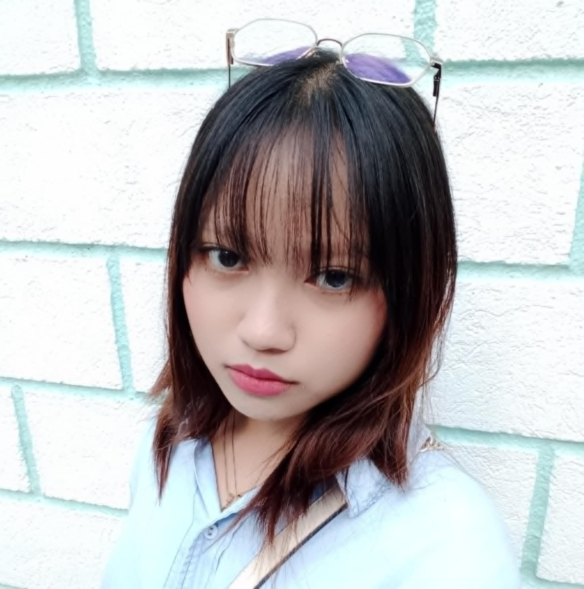

About Me
A Little More About My Journey
Hi! I’m Angella Shaolla G. Casul, a passionate BSIT student with a deep-seated love for the digital realm, where code intertwines with creativity. My initial spark ignited when I first explored the intricate dance of HTML and CSS, realizing the power to sculpt virtual spaces. This fascination quickly evolved into a profound appreciation for the logical elegance of programming and the rewarding challenge of problem-solving.
My Philosophy
I approach development with a user-centric mindset, striving to craft digital experiences that are not only functional but also intuitive and engaging. I believe in the power of clean, well-documented code and the iterative process of continuous improvement. For me, every project is an opportunity to learn, grow, and push the boundaries of what's possible.
Exploring the Horizon
Currently, I'm deeply immersed in the world of front-end frameworks, particularly React, and I'm also exploring the captivating universe of game development using Unity. The ability to create interactive and immersive experiences truly excites me, and I'm constantly seeking new ways to blend my technical skills with my creative vision.
Looking Ahead
My learning journey is a continuous one. I'm currently focusing on mastering advanced JavaScript concepts and delving into UI/UX design principles to create more polished and user-friendly interfaces. I aspire to contribute meaningfully to innovative projects and collaborate with like-minded individuals who share a passion for technology.
Feel free to explore my projects to witness my work in action. I'm always open to new opportunities and collaborations, so please don't hesitate to reach out! 😊
Beyond the Code
When I'm not immersed in lines of code, I enjoy expressing my creativity through drawing and digital art. I find the process of bringing imaginative ideas to life visually incredibly fulfilling. This creative outlet often influences my approach to design and problem-solving in the tech world.